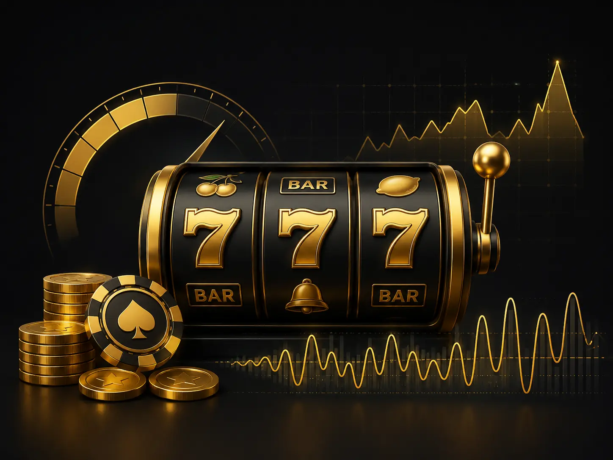

Volatility vs bankroll pain
High volatility amplifies streak risk. If your bankroll cannot survive dry streaks, your session ends before upside can appear.
That is why bet sizing and target spins matter more than vibe-based machine selection.
Volatility decides whether your session moves gradually or swings sharply. It changes hit cadence, drawdown risk, and the tradeoff between frequent small hits and rare large hits.
Variance is undefeated. Size your bets accordingly.

| Level | Hit frequency | Bankroll pain | Jackpot potential | Best fit |
|---|---|---|---|---|
| Low | Frequent smaller wins | Lower session pain per 100 spins | Lower ceiling | Players prioritizing longevity |
| Medium | Balanced hit rhythm | Moderate drawdowns | Moderate ceiling | Players wanting mixed pacing |
| High | Sparser wins | Higher drawdown stress | Highest top-end outcomes | Players comfortable with long droughts |
High volatility amplifies streak risk. If your bankroll cannot survive dry streaks, your session ends before upside can appear.
That is why bet sizing and target spins matter more than vibe-based machine selection.
Hit frequency and volatility are related but different. A game can have regular mini-hits and still reserve meaningful RTP for rare bonus spikes.
Use the simulator to compare equal RTP settings with different volatility presets.
Run low, medium, and high volatility with the same bankroll and spin target to see realistic survival differences.
Slots hub • RTP explained • Bankroll survival tool
Disclaimer: Slots are negative-EV and should be treated as entertainment spend.